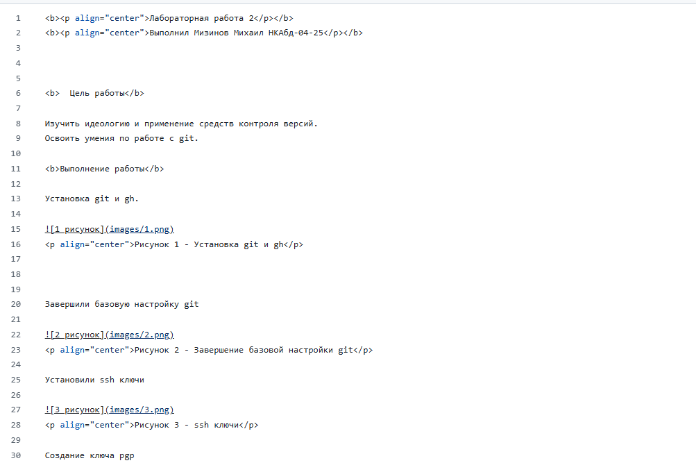
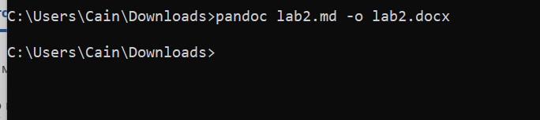
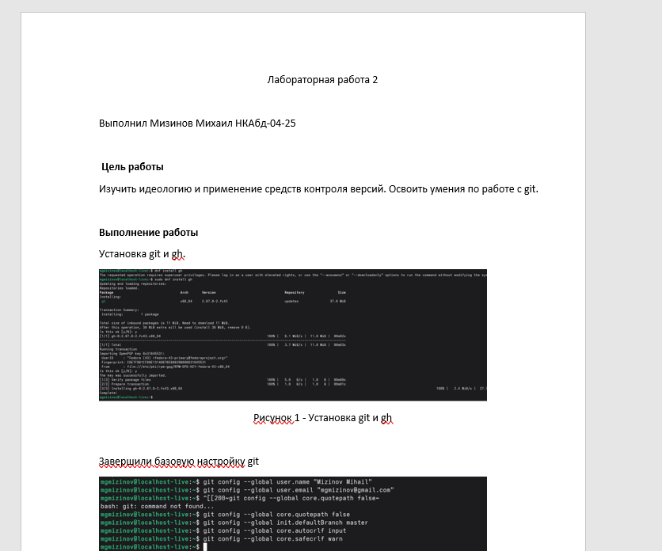

Лабораторная работа 3
Выполнил Мизинов Михаил НКАбд-04-25
Цель работы
Научиться оформлять отчёты с помощью легковесного языка разметки Markdown.
Задание
– Сделайте отчёт по предыдущей лабораторной работе в формате Markdown.
– В качестве отчёта просьба предоставить отчёты в 3 форматах: pdf, docx и md (в архиве, поскольку он должен содержать скриншоты, Makefile и т.д.)
Выполнение работы
Отчёт Лабораторной работы 2 в md

Риcунок 1 - Отчёт в md
Преобразование отчёта Лабораторной работы 2 в docx и pdf через pandoc

Риcунок 2 - md в docx через pandoc
Результат в word

Риcунок 3 - Результат в word
Выводы
Научился оформлять отчёты с помощью легковесного языка разметки Markdown.